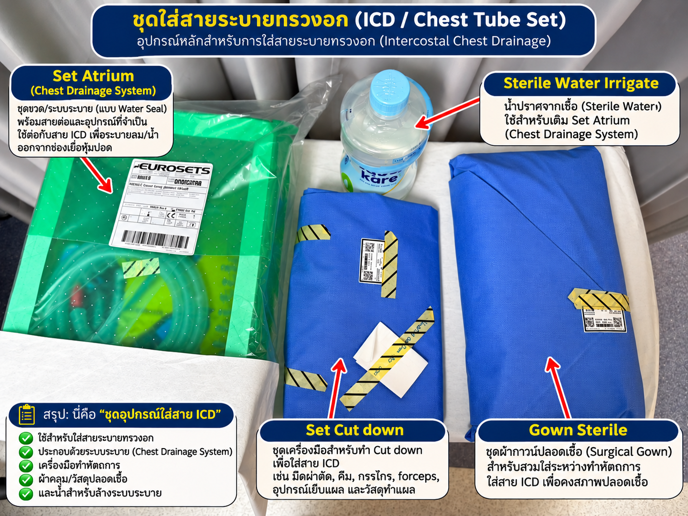
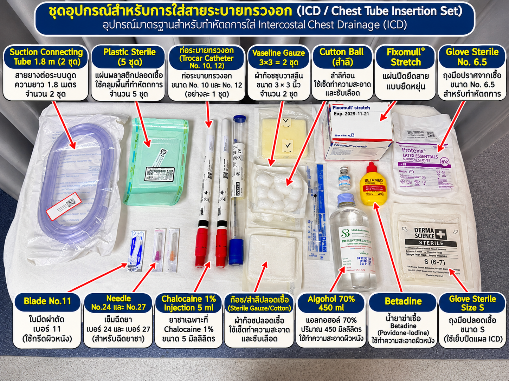
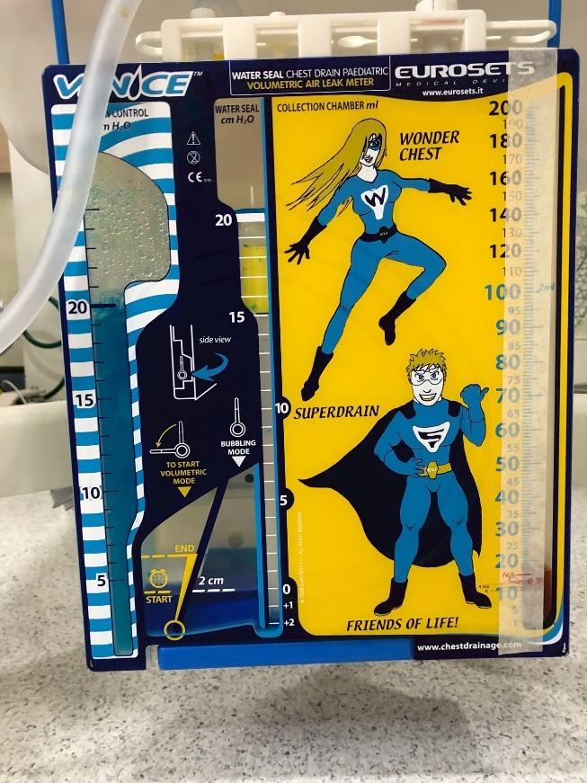
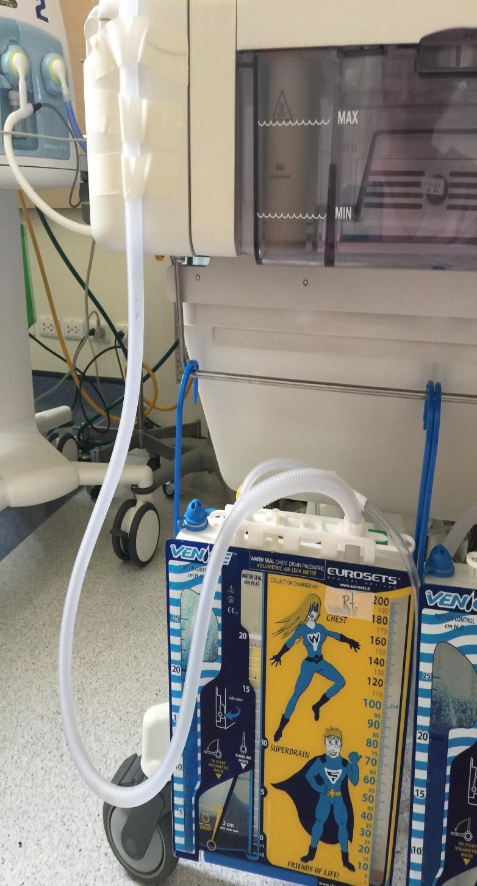

เกี่ยวกับเอกสารฉบับนี้
เว็บไซต์นี้จัดรูปแบบจากเอกสาร Word ต้นฉบับ โดยคงเนื้อหาและถ้อยคำตามเอกสาร พร้อมนำภาพประกอบที่ฝังอยู่ในไฟล์มาแสดง และจัดโครงสร้างเพื่อให้อ่านได้สะดวกบนหน้าจอทุกขนาด
เนื้อหาทางคลินิกบนเว็บไซต์นี้ถอดตามเอกสารต้นฉบับ ไม่ได้ผ่านการแก้ไขหรือรับรองเพิ่มเติม โปรดใช้ตามระบบกำกับดูแลและแนวทางของหน่วยงาน
ภาพรวมลำดับเนื้อหาใน Protocol
แผนภาพนี้จัดลำดับหัวข้อจากเอกสารต้นฉบับเพื่อช่วยนำทางการอ่าน โดยไม่เพิ่มขั้นตอนทางคลินิก
ก่อนใส่ ICD
การบ่งชี้ผู้ป่วย • ข้อบ่งชี้ • อธิบายและขอความยินยอม • เตรียมอุปกรณ์
เตรียมความพร้อมทารก
จัดท่า • Monitor HR, SpO₂ และ BP • ยาแก้ปวดตามแผน • เตรียมผิวหนัง • ล้างมือ
เตรียมขวด ICD
เติม Sterile water irrigate • ต่อ Suction connecting tube • วาง Atrium ต่ำกว่าทรวงอก
ใส่ ICD
กรีดผิวหนัง • Blunt dissection • เข้า Pleural space • ใส่ท่อ • ต่อ Under water seal
ประเมินหลังใส่
Water seal fluctuation • Bubbling • สารระบาย • เสียงปอด • SpO₂ • Chest X-ray
ดูแลต่อเนื่องและเตรียมถอด
เฝ้าระวังออกซิเจน • ดูแลสาย • จัดการความปวด • ประเมินผล • เตรียมก่อน/หลังถอด
วัตถุประสงค์
เพื่อให้ทารกได้รับการพยาบาลอย่างถูกต้องและปลอดภัย
เพื่อระบายลมในผู้ป่วยที่มีภาวะลมรั่วในช่องเยื่อหุ้มปอด (Pneumothorax )
เพื่อให้สามารถประเมินและเฝ้าระวังภาวะแทรกซ้อนจาก Pneumothorax ได้อย่างรวดเร็ว
เพื่อป้องกันภาวะแทรกซ้อนจากการใส่สายระบายทรวงอก
เพื่อส่งเสริมประสิทฺภาพในการระบายลมออกจากช่องเยื่อหุ้มปอด
เพื่อให้ปอดขยายตัวได้ดี และทารกได้รับออกซิเจนอย่างเพียงพอ
เพื่อให้ทารกหายใจได้อย่างมีประสิทธิภาพ
ขอบเขตการปฏิบัติ
ใช้สำหรับพยาบาลวิชาชีพที่ให้การดูแลทารกแรกเกิดท่ได้รับการวินิจฉัยว่าเป็น Pneumothorax และได้รับการใส่สายระบายทรวงอก ทั้งในระยะก่อนใส่ ระหว่างการใส่ และหลังการใส ICD รวมถึงระยะเตรียมถอดสายระบายทรวงอก
คำจำกัดความ
Pneumothorax : ภาวะที่มีลมสะสมอยู่ในช่องเยื่อหุ้มปอด ทำให้ปอดขยายตัวลดลงหรือแฟบลง
ICD (Intraventricular drainage ) : สายระบายที่ใส่ผ่านผนังทรวงอกเข้าสู่ช่องเยื่อหุ้มปอด เพื่อระบายลมหรือสารน้ำออก
Tension Pneumothorax : ภาวะลมในช่องเยื่อหุ้มปอดที่มีแรงดันเพิ่มข้นจนส่งผลต่อการขยายตัวของปอดและการไหลเวียนเลือด เป็นภาวะฉุกเฉินที่ต้องได้รับการรักษาโดยทันที
ขั้นตอนการปฏิบัติก่อนใส่ ICD
บ่งชี้ผู้ป่วยให้ถูกต้องตาม IPSGS goal 1 (International Patient Goals) ตรวจสอบชื่อ-นามสกุล วันเดือนปีเกิด ให้ตรงกัน
ข้อบ่งชี้ในการใส่ ICD (Intraventricular drainage )
2.1. ผู้ป่วยหายใจหอบเหนื่อย อัตราการหายใจ >= 60/min, หายใจมี Retraction, ฟังปอดพบเสียงหายใจลดลงข้างใดข้างหนึ่ง
2.2. ผู้ป่วยมีภาวะพร่องออกซิเจน O2Saturation <= 95%
2.3. ทำ Transillumination(การส่องผ่านแสง) พบมี Pneumothorax
2.4. Chest x-ray พบมีภาวะ Pneumothorax (มีลมรั่วในช่องเยื่อหุ้มปอด)
อธิบายความจำเป็นในการใส่ ICD กับบิดา มารดา และให้บิดา มารดา เซ็นเอกสารยินยอมในการรักษาทารกโดยวิธีการใส่ ICD (ใส่ท่อระบายทรวงอก)
เตรียมอุปกรณ์ให้ครบถ้วน ดังนี้
ท่อระบายทรวงอก (Trocar catheter ) No.10 และ No.12
Vaseline gauze 3x3
Blade No.11
Syringe 1 ml
Needle No.24 และ No.27
Bag sterile
Gauze 3x3
Fixomull
Glove sterile No.6.5
Glove sterile size S
Set cut down
Gown
Sterile water irrigation 500 ml
Suction connecting tube 1.8 m
Set Atrium
Alcohol 70% 450 ml
Betadine
Chalocaine 1% injection 5 ml
ภาพชุดอุปกรณ์ประกอบการใส่ ICD
ภาพประกอบจากเอกสารต้นฉบับในหัวข้อการเตรียมอุปกรณ์


การเตรียมความพร้อมสำหรับทารก
การเตรียมความพร้อมสำหรับทารก
จัดท่าให้ทารกนอนหงายและใช้ผ้าขนหนูผืนเล็กหนุนทรวงอกข้างที่จะใส่ ICD ให้ตะแคงขึ้น 30-40 องศาและยกแขนขึ้นเหนือศีรษะ
Monitor HR, SpO2, และ BP
ให้ยาแก้ปวด (Fentanyl)ก่อนทำหัตถการตามแผนการรักษาของแพทย์
เตรียมผิวหนังโดยทาน้ำยาฆ่าเชื้อ(Betadine) ให้ทั่วบริเวณด้านข้างหน้าอกโดยแพทย์ผู้ทำหัตถการและรอให้แห้ง
ฉีดยาชา Chalocaine 1% บริเวณที่จะทำการใส่ ICD โดยแพทย์ผู้ทำหัตถการ
ล้างมือก่อนทำหัตถการ
แพทย์ : สวมหมวก, Mask, Grown, Glove sterile
พยาบาลผู้ช่วย : สวมหมวก, Mask, Grown, Glove sterile
ขั้นตอนการเตรียมขวด ICD
ขั้นตอนการเตรียมขวด ICD (Intraventricular drainage )
เติม Sterile water irrigate ในช่องแรกให้อยู่ในระดับ 20 cms. น้ำจะเปลี่ยนสีฟ้าจางๆ
เติม Sterile water irrigate ในช่องที่ 2 ให้อยู่ในระดับที่ 2 cms. น้ำจะเปลี่ยนเป็นสีฟ้าเข็ม
ต่อสาย Suction connecting 1.8 m 2 สายเข้าด้วยกัน ด้านหนึ่งต่อกับ Atrium อีกด้านหนึ่งต่อกับ suction wall เปิด pressure ที่ 20 mmH2O Clampสายไว้ก่อน หลังจากที่ต่อกับท่อระบายลมแล้ว จึงปลด Clamp ให้ suction ทำงานได้ปกติ
วาง Atrium ให้อยู่ในระดับต่ำกว่าทรวงอก
ภาพประกอบระบบระบายทรวงอก (Atrium)
ภาพอุปกรณ์ที่ปรากฏต่อจากขั้นตอนการเตรียมขวด ICD ในเอกสารต้นฉบับ


ขั้นตอนการใส่ ICD
ขั้นตอนการใส่ ICD (Intraventricular drainage )
แพทย์ผู้ทำหัตถการใช้ blade No.11 กรีดผิวหนังความยาวประมาณ 0.5-1 cm ตำแหน่งใดตำแหน่งหนึ่ง บริเวณดังต่อไปนี้
(1) 4th-5th Intercostal space
(2) Anterior/ mid-axillary line
(3) เหนือขอบบนของซี่โครงล่าง
ใช้ Kelly clamp blunt dissection ผ่านช่วงกล้ามเนื้อ
เจาะเยื่อหุ้มปอดจนเข้า Pleural space
สอดท่อระบายลมเข้าไป ให้ได้ตำแหน่งที่ต้องการ ในกรณีที่ผู้ป่วยมีภาวะ Pneumothorax ปลายท่อชี้จะขึ้น และในผู้ป่วยทีมีภาวะ Effusion ปลายท่อจะชี้ลง
ตั้งเข้ากับระบบ Under water seal เปิด clamp พร้อมสังเกตการทำงานว่ามีลมผุดหรือไม่และsuction ทำงานได้ดีหรือไม่
เย็บยึดท่อและปิดแผลด้วย Vaseline gauze ปิดทับด้วย gauze sterile และ ปิด Fixomull ให้แนบแน่น
ยึดท่อระบายของเหลวจากทรวงอกกับเตียงด้วยเทปกาวเพื่อป้องกันไม่ให้ท่อระบายของเหลวเลื่อนหลุด
ล้างมือหลังทำหัตถการ
ลงบันทึกข้อมูลทางการพยาบาล
ประเมินหลังใส่ ICD
ประเมินหลังใส่ ICD (Intraventricular drainage )
การทำงานของ Water seal ICD Fluctuate ดี
มี/ไม่มี bubbling
สังเกตุปริมาณและลักษณะของสารระบาย
ฟังปอดได้ยินเสียงหายใจดีขึ้น
O2saturation ดีขึ้น SpO2 > 95%
ลักษณะการหายใจ No retraction, No grunting
การขยายตัวของทรวงอกเท่ากันทั้งสองข้ง
Chest x-ray พบท่อระบายลมอยู่ในตำแหน่งที่เหมาะสม
การพยาบาลการดูแลทารกแรกเกิดที่มีภาวะ Pneumothorax On ICD
การพยาบาลการดูแลทารกแรกเกิดที่มีภาวะ Pneumothorax On ICD (Intraventricular drainage )
การเฝ้าระวังภาวะพร่องออกซิเจน
เหตุผลทางการพยาบาล
เพื่อประเมินประสิทธิภาพการแลกเปลี่ยนก๊าซ ค้นหาภาวะพร่องออกซิเจน และให้การช่วยเหลือได้อย่างรวดเร็ว
กิจกรรมการพยาบาล
1. ติดตาม HR, RR, BP และ SpO₂ ด้วยเครื่อง Monitor อย่างต่อเนื่องตามความรุนแรงของอาการ
2.สังเกตอาการหายใจลำบาก เช่น Retraction, Nasal flaring และ Grunting
3.ประเมินการขยายตัวของทรวงอกและฟังเสียงปอดอย่างสม่ำเสมอ
ให้ออกซิเจนตามแผนการรักษา
4.ติดตามผล Blood Gas และ Chest X-ray ตามแผนการรักษา
รายงานแพทย์ทันทีเมื่อพบ SpO₂ ลดลงอย่างต่อเนื่อง หายใจลำบากมากขึ้น หรือมีภาวะ Bradycardia
การดูแลสายระบายทรวงอก (ICD)
เหตุผลทางการพยาบาล
เพื่อส่งเสริมการขยายตัวของทรวงอก ลดการกดทับสายระบาย และป้องกันภาวะแทรกซ้อนจากการนอนท่าเดิมเป็นเวลานาน
กิจกรรมการพยาบาล
1. ตรวจสอบตำแหน่งสาย ICD ว่าอยู่ในตำแหน่งที่เหมาะสมและยึดติดแน่นกับผิวหนัง
2. ตรวจสอบผ้าปิดแผลบริเวณที่ใส่สาย ICD ให้สะอาด แห้ง และปิดสนิท
3. ตรวจสอบสายระบายไม่ให้พับงอ หักพับ ถูกกดทับ หรือมีสิ่งอุดตัน
4. จัดระบบสายระบายให้มีความยาวเพียงพอต่อการเคลื่อนไหวของทารก และวางขวดระบายให้อยู่ต่ำกว่าระดับทรวงอก
5. ตรวจสอบรอยต่อของสายระบายทุกจุดว่าแน่น ไม่หลุดหรือมีอากาศรั่ว
ประเมินการทำงานของระบบระบาย ได้แก่
Bubbling: สังเกตฟองอากาศใน Water seal chamber
Swinging/Oscillation: สังเกตการขึ้นลงของระดับน้ำตามการหายใจในระบบที่มี Water seal
Air leak: สังเกตการรั่วของอากาศที่ผิดปกติ
6. บันทึกปริมาณ สี และลักษณะของสารระบาย
7. ไม่เปิดหรือปรับแรงดูดเองหากไม่มีคำสั่งการรักษา
8. ไม่หนีบสาย ICD (Clamping) โดยไม่มีข้อบ่งชี้และคำสั่งจากแพทย์ เนื่องจากอาจทำให้เกิด Tension Pneumothorax
9. ไม่รีดหรือบีบสายระบาย (Milking/Stripping) เป็นกิจวัตร เพราะอาจทำให้เกิดแรงดันลบสูงและทำลายเนื้อเยื่อ
การจัดการความปวด
เหตุผลทางการพยาบาล
เพื่อลดความเจ็บปวดและความเครียดจากการใส่สายระบาย ช่วยให้ทารกพักผ่อนได้เพียงพอ และลดการใช้ออกซิเจนจากภาวะเครียด
กิจกรรมการพยาบาล
1. ประเมินความปวดด้วย NIPS
2. จัดสิ่งแวดล้อมให้สงบ ลดแสงและเสียงรบกวน
3. ให้ยาแก้ปวดตามแผนการรักษา
4. ประเมินความปวดซ้ำหลังให้การพยาบาลหรือให้ยา
5. เฝ้าระวังผลข้างเคียงของยา เช่น ภาวะกดการหายใจและ Bradycard
การประเมินผลการพยาบาล (Evaluation)
1. ทารกมีการหายใจสม่ำเสมอ ไม่มีอาการหายใจลำบากเพิ่มขึ้น
2. ค่า SpO₂ อยู่ในเป้าหมายที่แพทย์กำหนด
3. HR และ BP อยู่ในเกณฑ์เหมาะสมกับอายุครรภ์และสภาพของทารก
4. ทรวงอกขยายตัวดีขึ้นและเสียงปอดดีขึ้น
5. ระบบ ICD สามารถระบายลมได้อย่างมีประสิทธิภาพ
6. ไม่มีการเลื่อนหลุด อุดตัน หรือพับงอของสายระบาย
7. ไม่มีภาวะเลือดออกหรือติดเชื้อบริเวณแผล
8. ผล Chest X-ray แสดงการขยายตัวของปอดดีขึ้นตามแผนการรักษา
การเตรียมความพร้อมก่อนถอด ICD
การถอดสายระบายทรวงอกเป็นการตัดสินใจของแพทย์ โดยพยาบาลมีหน้าที่เตรียมความพร้อมและเฝ้าระวังหลังถอดสาย
การพยาบาลก่อนถอดสาย
1. ประเมินสภาพระบบทางเดินหายใจและระบบไหลเวียนโลหิต
2. ตรวจสอบผล Chest X-ray ว่าปอดขยายตัวดีขึ้น
3. ประเมินการรั่วของอากาศและการทำงานของระบบระบาย
4. เตรียมอุปกรณ์ทำแผลปลอดเชื้อ
5. ประเมินและจัดการความปวดตามแผนการรักษา
การพยาบาลหลังถอดสาย
1. ปิดแผลด้วย Tegaderm with pad
2. ประเมิน HR, RR, BP และ SpO₂ อย่างใกล้ชิด
3. สังเกตอาการหายใจลำบาก หน้าอกบุ๋ม และเสียงปอดที่เปลี่ยนแปลง
4. เฝ้าระวังการกลับเป็นซ้ำของ Pneumothorax
5. ติดตามผล Chest X-ray ตามแผนการรักษา
6. บันทึกผลการประเมินและรายงานความผิดปกติทันที
เอกสารอ้างอิง
1. Royal Cornwall Hospitals NHS Trust. (2025). Pneumothorax Neonatal Clinical Guideline V3.2. เป็นแนวทางการดูแลทารกแรกเกิดที่มี Pneumothorax ครอบคลุมการประเมินและการรักษา อ่านเอกสารฉบับเต็ม (PDF)
2. Thames Valley and Wessex Neonatal Operational Delivery Network. (2024). Guideline for the Nursing Care of Chest Drains on the Neonatal Un
3. Royal Children's Hospital Melbourne. (2022). Nursing Guidelines: Chest Drain Management. แนวทางการประเมินระบบระบายทรวงอก การเฝ้าระวัง Air Leak การดูแลสายระบาย และภาวะแทรกซ้อ
4. Safer Care Victoria. Pneumothorax Drainage for Neonates. แนวทางการจัดการ Pneumothorax ในทารกแรกเกิดและการดูแลหลังใส่สายระบายทรวงอ
5. National Association of Neonatal Nurses (NANN). Policies, Procedures, and Competencies for Neonatal Nursing Care. Sixth Edi
6. Ashford and St Peter's Hospitals NHS Foundation Trust. (2026). Pneumothorax Guideline